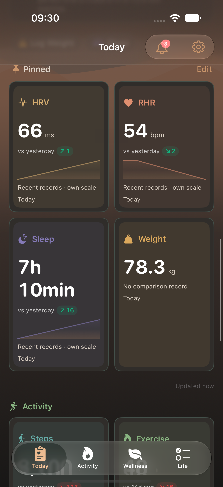
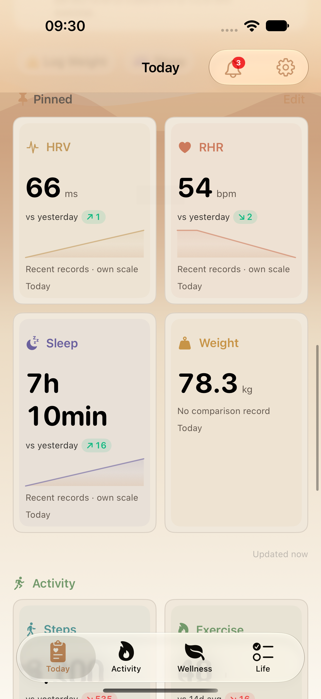
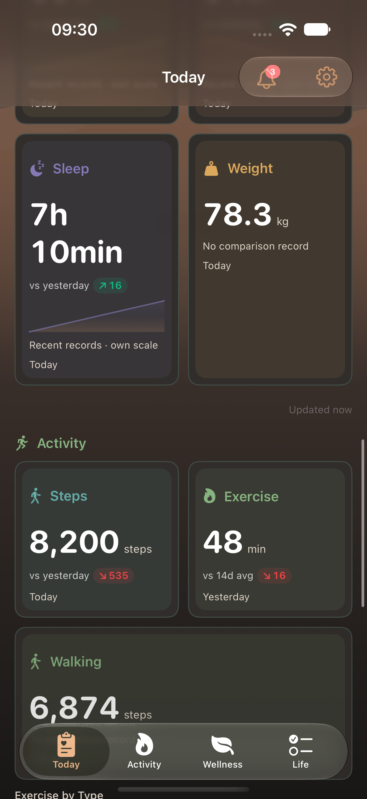
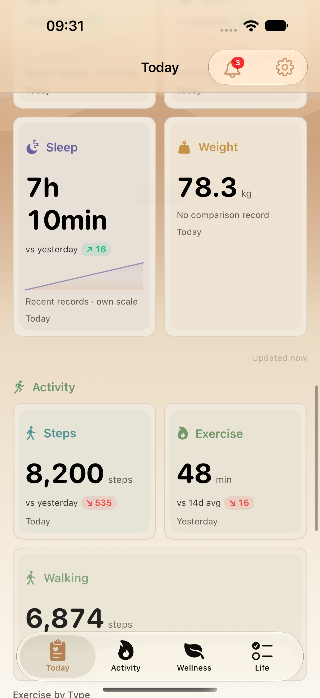

과거 기록만 바뀌어도 그래프를 갱신하도록 카드 비교를 수정한 빌드의 새 실제 iPhone 화면4장입니다. 어두움·밝음의 각 행 높이·폭과 체중 상세 진입, Wellness 신체 지표·상세를 검사했습니다. 테스트 fixture이며 개인 기록이나 시안이 아닙니다.
범위·제한 · 개별 출처 · 실행 증거

T03-pinned-wellness-row-0-dark

T03-pinned-wellness-row-0-light

T03-pinned-wellness-row-1-dark

T03-pinned-wellness-row-1-light